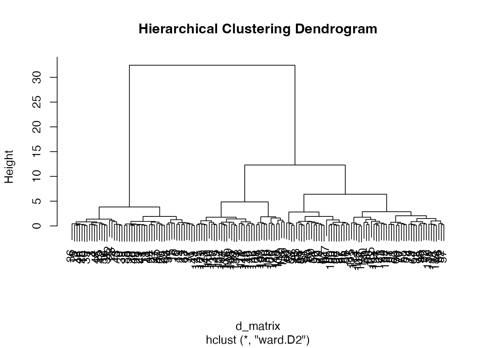
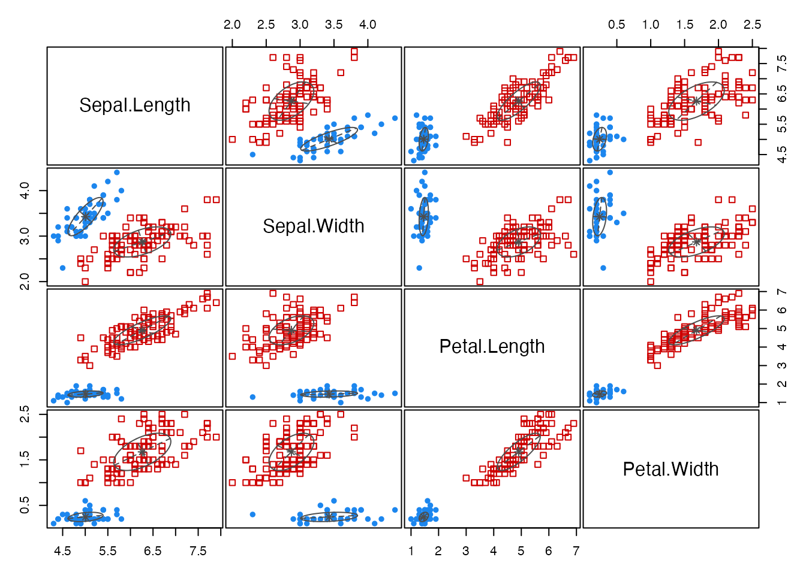
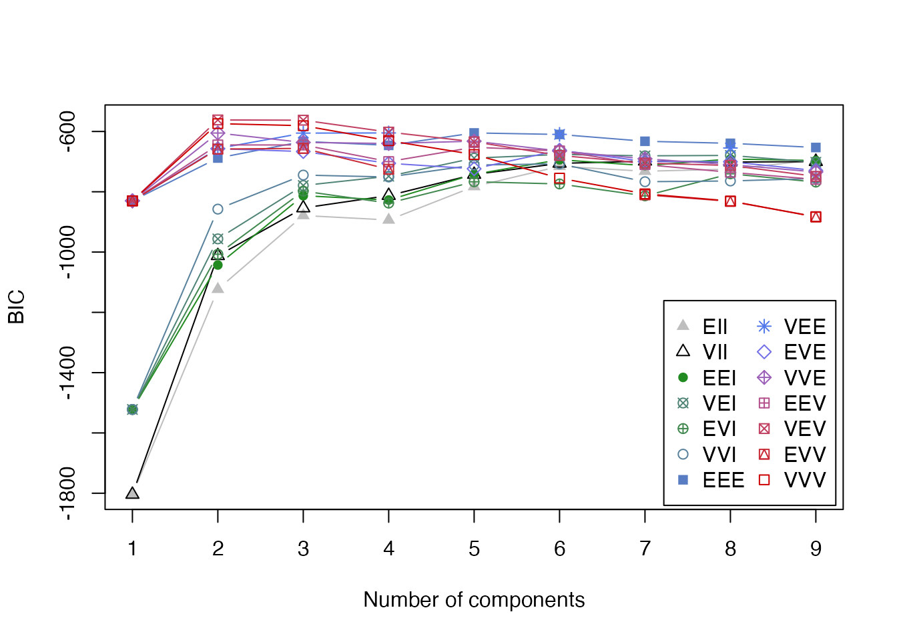
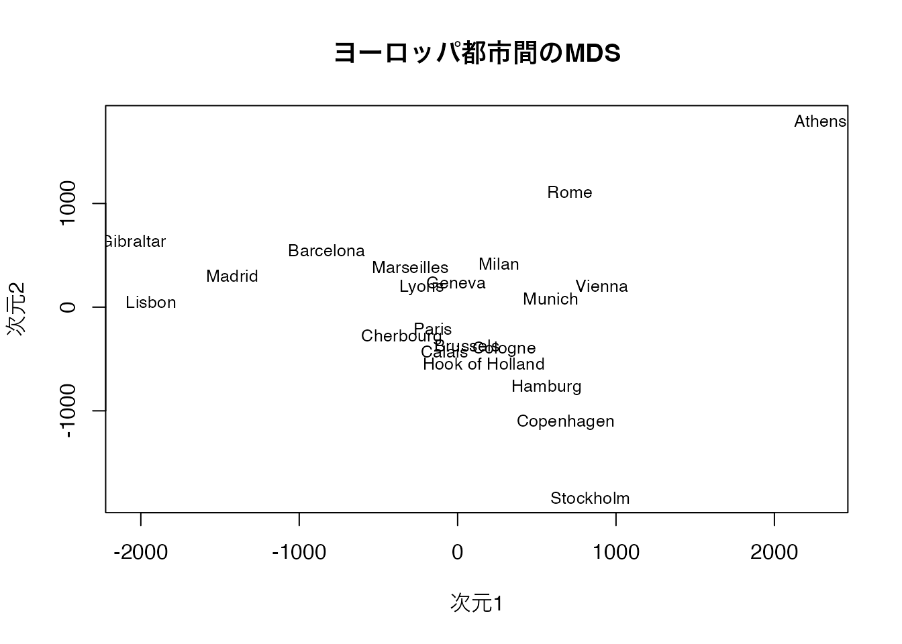
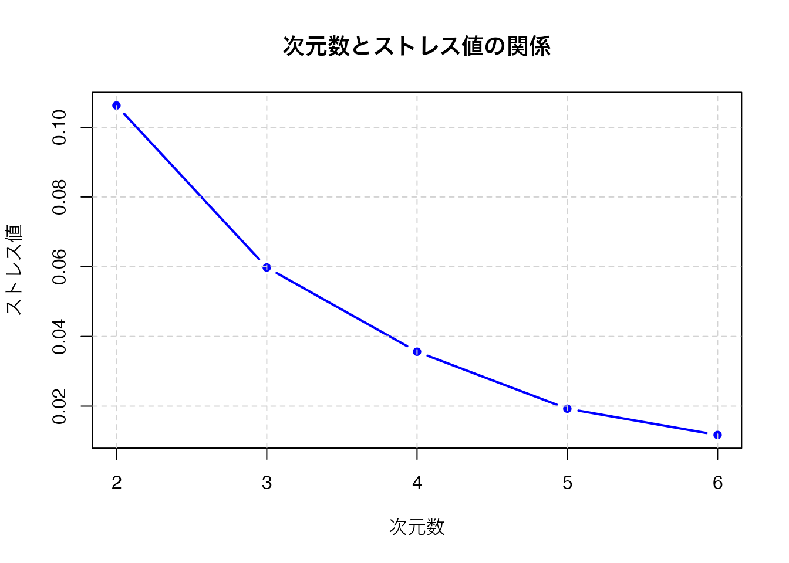
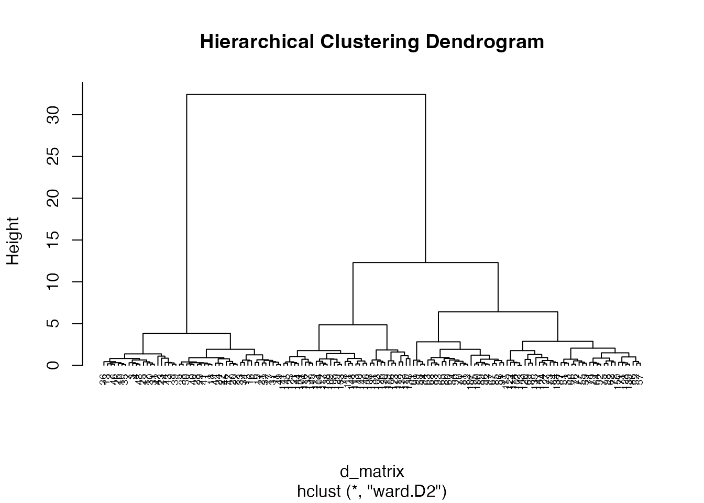
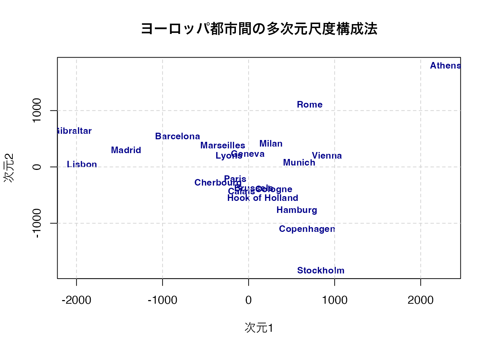
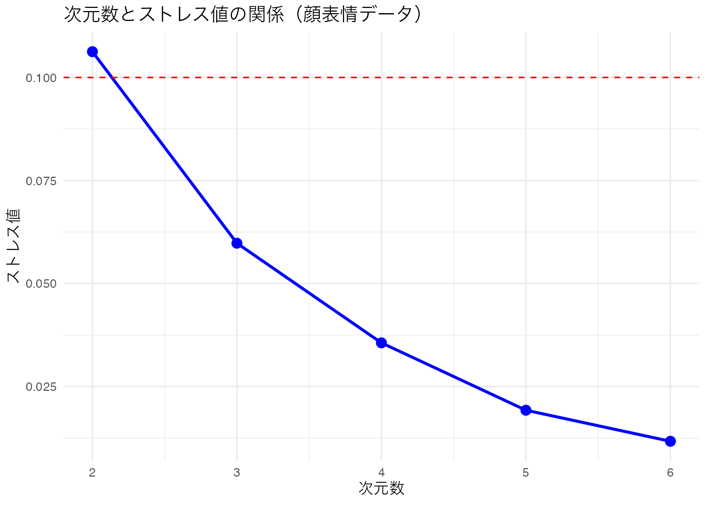
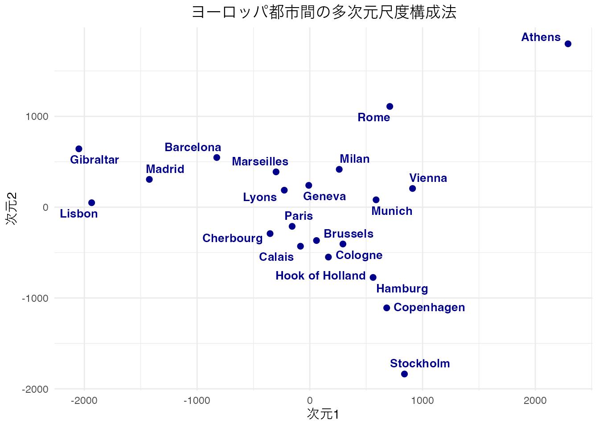
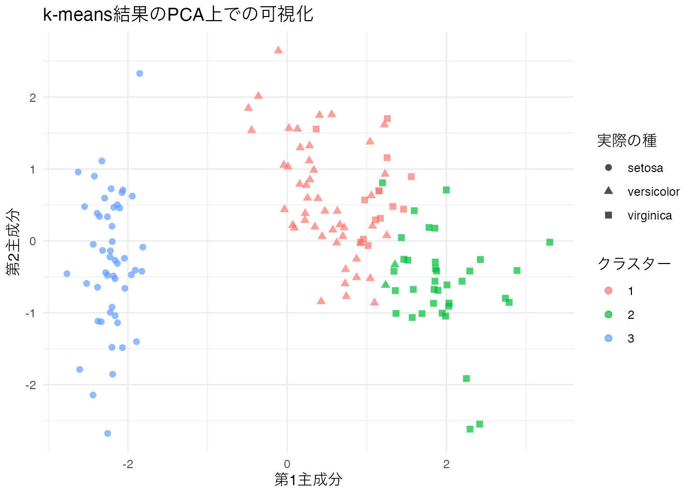

# irisデータからユークリッド距離行列を計算
d_matrix <- dist(iris[, -5], method = "euclidean")
# ウォード法による階層的クラスター分析
result.h <- hclust(d_matrix, method = "ward.D2")
plot(result.h, main = "Hierarchical Clustering Dendrogram")
| 項目 | 内容 |
|---|---|
| 分類 | 枝（選択） |
| 前提 | U3（数学・行列の基礎） |
| 次のユニット | U16（行と列をまたぐ分析） |
| 使用データ | iris, eurodist |
| 学習目標 | 距離の概念を理解する / クラスタリングの各手法を実行し結果を解釈できる / MDSの基本を理解し低次元可視化ができる |
U14では分散共分散行列（相関行列）を出発点とする分析を扱いました。このユニットでは距離行列を出発点とする分析を取り上げます。
距離（distance） とは、次の4つの公理を満たす数値のことです。
距離行列は要素が距離を表す正方・対称行列です。相関行列や分散共分散行列と同じ構造を持ちますが、その要素は「似ていないほど大きい」という非類似性を表す数値です。
Rでは dist() 関数で距離行列を計算します。主な距離の種類は次の通りです。
"euclidean"）: \(d(x,y) = \sqrt{\sum_{i=1}^N (x_i-y_i)^2}\)。最も一般的な距離"manhattan"）: \(d(x,y) = \sum |x_i - y_i|\)。格子状の道のりに相当"minkowski"）: \(d(x,y) = \left(\sum |x_i-y_i|^p\right)^{1/p}\)。\(p=1\) でマンハッタン、\(p=2\) でユークリッドクラスター分析は、類似したものをまとめてクラスター（塊）を形成する分析方法です。大きく分けて、階層的手法と非階層的手法があります。
距離の短いものから順にまとめていき、デンドログラム（樹形図）として結果を表示します。hclust() 関数で実行し、クラスター間をまとめる方法（リンケージ）を method 引数で指定します。
主なリンケージ法:
| 方法 | method引数 | 特徴 |
|---|---|---|
| ウォード法 | "ward.D2" |
クラスター内分散を最小化。最も広く使われる |
| 最短距離法 | "single" |
クラスター間の最近接点で連結。鎖状になりやすい |
| 最長距離法 | "complete" |
クラスター間の最遠点で連結 |
| 群平均法 | "average" |
クラスター間の平均距離で連結 |
cutree() 関数でデンドログラムを任意のクラスター数に分割します。
# irisデータからユークリッド距離行列を計算
d_matrix <- dist(iris[, -5], method = "euclidean")
# ウォード法による階層的クラスター分析
result.h <- hclust(d_matrix, method = "ward.D2")
plot(result.h, main = "Hierarchical Clustering Dendrogram")
# 3クラスターに分割し、実際の種と比較
clusters <- cutree(result.h, k = 3)
table(clusters, iris$Species)
clusters setosa versicolor virginica
1 50 0 0
2 0 49 15
3 0 1 35setosa は完全に分離され、versicolor と virginica の一部が混ざっていることがわかります。
非階層的クラスター分析の代表的な手法です。あらかじめクラスター数を指定し、各データ点を最も近い重心のクラスターに割り当てる操作を繰り返します。
アルゴリズム:
# k-means法（生データ行列を渡す）
set.seed(123)
result.k <- kmeans(iris[, 1:4], centers = 3)
table(result.k$cluster, iris$Species)
setosa versicolor virginica
1 50 0 0
2 0 48 14
3 0 2 36k-means法は初期値に依存するため、set.seed() で乱数シードを固定するか、nstart 引数で複数の初期値を試すことが推奨されます。
通常のクラスター分析（ハードクラスタリング）では各データ点は1つのクラスターにのみ所属しますが、ファジィc-means法（ソフトクラスタリング）では、各データ点が複数のクラスターに確率的に所属します。
pacman::p_load(e1071)
result.c <- e1071::cmeans(d_matrix, centers = 3, m = 2)
head(result.c$membership) 1 2 3
1 0.9961596 0.002333848 0.001506517
2 0.9942334 0.003508814 0.002257793
3 0.9893041 0.006430901 0.004265036
4 0.9916594 0.005065203 0.003275401
5 0.9959249 0.002468266 0.001606853
6 0.9753690 0.015286076 0.009344916membership は各データ点の各クラスターへの所属度を表します。値が均等に近いデータ点は、クラスター境界付近にあることを示しています。
階層的クラスター分析やk-meansではクラスター数の決定に客観的な基準がありません。モデルベースクラスタリングでは、データが複数の正規分布の混合（混合正規分布モデル, GMM）から生成されたと仮定し、BIC（ベイズ情報量基準）を用いてクラスター数と共分散構造を同時に選択します。
pacman::p_load(mclust)
gmm_result <- mclust::Mclust(iris[, 1:4])
summary(gmm_result, parameters = TRUE)----------------------------------------------------
Gaussian finite mixture model fitted by EM algorithm
----------------------------------------------------
Mclust VEV (ellipsoidal, equal shape) model with 2 components:
log-likelihood n df BIC ICL
-215.726 150 26 -561.7285 -561.7289
Clustering table:
1 2
50 100
Mixing probabilities:
1 2
0.3333319 0.6666681
Means:
[,1] [,2]
Sepal.Length 5.0060022 6.261996
Sepal.Width 3.4280049 2.871999
Petal.Length 1.4620007 4.905992
Petal.Width 0.2459998 1.675997
Variances:
[,,1]
Sepal.Length Sepal.Width Petal.Length Petal.Width
Sepal.Length 0.15065114 0.13080115 0.02084463 0.01309107
Sepal.Width 0.13080115 0.17604529 0.01603245 0.01221458
Petal.Length 0.02084463 0.01603245 0.02808260 0.00601568
Petal.Width 0.01309107 0.01221458 0.00601568 0.01042365
[,,2]
Sepal.Length Sepal.Width Petal.Length Petal.Width
Sepal.Length 0.4000438 0.10865444 0.3994018 0.14368256
Sepal.Width 0.1086544 0.10928077 0.1238904 0.07284384
Petal.Length 0.3994018 0.12389040 0.6109024 0.25738990
Petal.Width 0.1436826 0.07284384 0.2573899 0.16808182# 分類結果の可視化
plot(gmm_result, what = "classification")
# BICによるモデル選択結果
plot(gmm_result, what = "BIC")
BICプロットでは、横軸がクラスター数、縦軸がBIC値を示します。BICが最大となるモデルが最適として選択されます。モデル名の3文字コード（例: VEV）は、クラスターの体積（Volume）、形状（Shape）、向き（Orientation）がそれぞれ等しい（E）か異なる（V）かを示しています。
多次元尺度構成法（Multidimensional Scaling, MDS）は、距離行列から低次元の座標を復元する手法です。「距離行列から地図を作る」と考えるとわかりやすいでしょう。
データが比率尺度水準で誤差のない距離である場合、cmdscale() 関数で計量MDSを実行します。
# ヨーロッパ都市間の距離データでMDS
result <- cmdscale(eurodist, k = 2)
plot(result[, 1], result[, 2], type = "n",
xlab = "次元1", ylab = "次元2",
main = "ヨーロッパ都市間のMDS")
text(result[, 1], result[, 2], labels = rownames(result), cex = 0.8)
地図のように各都市が配置されていることが確認できます。南北が反転しているように見えるかもしれませんが、MDSの解は回転や鏡映に対して不定であるため、相対的な位置関係が正しく復元されていれば問題ありません。
心理学では比率尺度水準のデータは少なく、順序尺度水準のデータ（「AよりBの方が似ている」という大小関係）を扱うことが一般的です。非計量MDSはデータの大小関係（順序）を保持する座標を求めます。
適合度はストレス値（stress） で評価します。
| ストレス値 | 評価 |
|---|---|
| 0.05以下 | 優秀 |
| 0.10以下 | 良好 |
| 0.20以下 | 普通 |
| 0.20超 | 不良 |
smacof パッケージの mds() 関数で非計量MDSを実行できます。次元数を変えながらストレス値をプロットし、適切な次元数を決定します。スクリープロットと同様に、ストレス値が急減する「肘」を目安にします。
pacman::p_load(smacof)
# 顔表情の類似度データで次元数とストレス値の関係を確認
dimensions <- 2:6
stress_values <- numeric(length(dimensions))
for (i in seq_along(dimensions)) {
result_temp <- smacof::mds(FaceExp, ndim = dimensions[i], type = "ordinal")
stress_values[i] <- result_temp$stress
}
plot(dimensions, stress_values, type = "b", pch = 16,
xlab = "次元数", ylab = "ストレス値",
main = "次元数とストレス値の関係", col = "blue", lwd = 2)
grid(lty = 2, col = "lightgray")
距離の公理において、\(d(x,y) = d(y,x)\) はどの性質を表しているか。
三角不等式 \(d(x,z) \leq d(x,y) + d(y,z)\) は、直感的にどういう意味か。
階層的クラスター分析において最も広く使われ、クラスター内分散を最小化するリンケージ法はどれか。
最短距離法（single linkage）は、クラスターが鎖状に連なりやすいという欠点がある。
k-means法の欠点として正しいものはどれか。
Mclustにおいて、最適なクラスター数とモデルを選択するために使われる基準はどれか。
MDSのストレス値が0.10以下であれば、一般にどのように評価されるか。
デンドログラム（樹形図）は、どのクラスター分析の結果を表示するために使われるか。
iris データの数値4変数に対して、ユークリッド距離行列を計算し、as.matrix() で行列に変換して最初の5行5列を表示しなさい。
# irisの数値変数からユークリッド距離行列を計算
d_matrix <- dist(iris[, -5], method = "euclidean")
# 行列に変換して最初の5行5列を表示
as.matrix(d_matrix)[1:5, 1:5] 1 2 3 4 5
1 0.0000000 0.5385165 0.509902 0.6480741 0.1414214
2 0.5385165 0.0000000 0.300000 0.3316625 0.6082763
3 0.5099020 0.3000000 0.000000 0.2449490 0.5099020
4 0.6480741 0.3316625 0.244949 0.0000000 0.6480741
5 0.1414214 0.6082763 0.509902 0.6480741 0.0000000距離行列は対称行列であり、対角要素は0です（同じ個体間の距離はゼロ）。これは距離の公理の「同一性」と「対称性」を反映しています。
iris データに対してウォード法で階層的クラスター分析を行い、デンドログラムを描画しなさい。さらに cutree() で3クラスターに分割し、実際の Species との分類精度をクロス表で確認しなさい。
# ユークリッド距離行列
d_matrix <- dist(iris[, -5], method = "euclidean")
# ウォード法で階層的クラスター分析
result.h <- hclust(d_matrix, method = "ward.D2")
plot(result.h, main = "Hierarchical Clustering Dendrogram",
cex = 0.6, hang = -1)
# 3クラスターに分割
clusters <- cutree(result.h, k = 3)
# 実際の種との比較
table(clusters, iris$Species)
clusters setosa versicolor virginica
1 50 0 0
2 0 49 15
3 0 1 35setosa は完全に1つのクラスターにまとまっています。versicolor と virginica の境界付近にある個体がいくつか誤分類されていますが、全体として良好な分類結果です。
iris データに対して kmeans() を用いて3クラスターに分類しなさい。nstart = 25 を指定し、初期値依存性を軽減すること。結果を Species と比較しなさい。
# k-means法（生データ行列を渡す、nstart=25で安定化）
set.seed(123)
result.k <- kmeans(iris[, 1:4], centers = 3, nstart = 25)
# 実際の種との比較
table(result.k$cluster, iris$Species)
setosa versicolor virginica
1 0 48 14
2 0 2 36
3 50 0 0k-means法のクラスター番号はランダムに割り振られるため、クラスター番号と Species の対応は実行ごとに変わる可能性があります。nstart = 25 によって25回の初期値で試行し、最良の結果が採用されます。
mclust::Mclust() を用いて iris の数値4変数に対してモデルベースクラスタリングを行い、最適なクラスター数と選択されたモデルを確認しなさい。
pacman::p_load(mclust)
# モデルベースクラスタリング
gmm_result <- mclust::Mclust(iris[, 1:4])
# 結果の確認
summary(gmm_result)----------------------------------------------------
Gaussian finite mixture model fitted by EM algorithm
----------------------------------------------------
Mclust VEV (ellipsoidal, equal shape) model with 2 components:
log-likelihood n df BIC ICL
-215.726 150 26 -561.7285 -561.7289
Clustering table:
1 2
50 100 # BICプロット
plot(gmm_result, what = "BIC")
BICが最大となるモデルが自動的に選択されます。irisデータでは2クラスターが選択されることが多いですが、これは versicolor と virginica が非常に近い分布を持つためです。
eurodist（ヨーロッパ都市間距離）に対して cmdscale() で2次元の古典的MDSを実行し、都市名をラベルとしてプロットしなさい。
# 古典的MDSの実行
result <- cmdscale(eurodist, k = 2)
# プロット
plot(result[, 1], result[, 2], type = "n",
xlab = "次元1", ylab = "次元2",
main = "ヨーロッパ都市間の多次元尺度構成法")
text(result[, 1], result[, 2],
labels = rownames(result), cex = 0.8,
col = "darkblue", font = 2)
grid(lty = 2, col = "lightgray")
ヨーロッパの地図に近い配置が得られます。MDSの解は回転・鏡映に対して不定なので、南北や東西が反転していても問題ありません。重要なのは都市間の相対的な位置関係が保持されていることです。
3つのクラスタリング手法（階層的、k-means、Mclust）の分類結果をそれぞれ iris$Species と比較し、table() で表示しなさい。どの手法が最もよい分類を与えるか考察すること。
# 階層的クラスター分析
d_matrix <- dist(iris[, -5], method = "euclidean")
result.h <- hclust(d_matrix, method = "ward.D2")
cl_hclust <- cutree(result.h, k = 3)
# k-means法
set.seed(123)
result.k <- kmeans(iris[, 1:4], centers = 3, nstart = 25)
cl_kmeans <- result.k$cluster
# Mclust（3クラスターを指定）
gmm_result3 <- mclust::Mclust(iris[, 1:4], G = 3)
cl_mclust <- gmm_result3$classification# 階層的クラスター分析 vs Species
table(階層的 = cl_hclust, Species = iris$Species) Species
階層的 setosa versicolor virginica
1 50 0 0
2 0 49 15
3 0 1 35# k-means vs Species
table(kmeans = cl_kmeans, Species = iris$Species) Species
kmeans setosa versicolor virginica
1 0 48 14
2 0 2 36
3 50 0 0# Mclust vs Species
table(Mclust = cl_mclust, Species = iris$Species) Species
Mclust setosa versicolor virginica
1 50 0 0
2 0 45 0
3 0 5 50クラスター番号と Species の対応は手法によって異なりますが、各クラスターが主にどの種に対応するかを読み取って比較します。setosa はどの手法でも完全に分離されます。versicolor と virginica の分類精度に差が出ることが多いです。
smacof パッケージの FaceExp データに対して、次元数を2から6まで変えて非計量MDS（type = "ordinal"）を実行し、ストレス値をプロットしなさい。適切な次元数を考察すること。
pacman::p_load(smacof)
# 次元数ごとのストレス値を計算
dimensions <- 2:6
stress_values <- numeric(length(dimensions))
for (i in seq_along(dimensions)) {
result_temp <- smacof::mds(FaceExp, ndim = dimensions[i], type = "ordinal")
stress_values[i] <- result_temp$stress
}
# ストレス値のプロット
tibble(
次元数 = dimensions,
ストレス値 = stress_values
) %>%
ggplot(aes(x = 次元数, y = ストレス値)) +
geom_line(linewidth = 1, color = "blue") +
geom_point(size = 3, color = "blue") +
geom_hline(yintercept = 0.1, linetype = "dashed", color = "red") +
labs(title = "次元数とストレス値の関係（顔表情データ）",
x = "次元数", y = "ストレス値") +
theme_minimal()
赤い破線はストレス値 = 0.1（良好の基準）です。ストレス値が急激に減少する「肘」の位置や、ストレス値が0.1を下回る次元数を目安に、適切な次元数を判断します。
eurodist の古典的MDS結果を ggplot2 で可視化しなさい。ggrepel::geom_text_repel() を使ってラベルの重なりを回避すること。
pacman::p_load(ggrepel)
# MDSの実行
result <- cmdscale(eurodist, k = 2)
# データフレームに変換
mds_df <- tibble(
dim1 = result[, 1],
dim2 = result[, 2],
city = rownames(result)
)
# ggplot2で可視化
ggplot(mds_df, aes(x = dim1, y = dim2)) +
geom_point(color = "darkblue", size = 2) +
ggrepel::geom_text_repel(
aes(label = city),
size = 3.5, color = "darkblue", fontface = "bold",
box.padding = 0.3, point.padding = 0.3
) +
labs(title = "ヨーロッパ都市間の多次元尺度構成法",
x = "次元1", y = "次元2") +
theme_minimal() +
theme(plot.title = element_text(hjust = 0.5))
ggrepel::geom_text_repel() はラベル同士が重ならないように自動的に位置を調整してくれます。
iris データの数値4変数に対してk-means法を実行し、クラスタリング結果を主成分分析（prcomp()）の第1・第2主成分上にプロットして可視化しなさい。色でクラスター所属を示すこと。
# k-means法
set.seed(123)
km_result <- kmeans(iris[, 1:4], centers = 3, nstart = 25)
# 主成分分析で2次元に射影
pca_result <- prcomp(iris[, 1:4], scale. = TRUE)
# データフレームに変換
plot_df <- tibble(
PC1 = pca_result$x[, 1],
PC2 = pca_result$x[, 2],
cluster = factor(km_result$cluster),
species = iris$Species
)
# ggplot2で可視化
ggplot(plot_df, aes(x = PC1, y = PC2, color = cluster, shape = species)) +
geom_point(size = 2, alpha = 0.7) +
labs(title = "k-means結果のPCA上での可視化",
x = "第1主成分", y = "第2主成分",
color = "クラスター", shape = "実際の種") +
theme_minimal()
クラスター所属を色で、実際の種を形で示しています。色と形がおおむね一致していれば、クラスタリングが良好に種を分離できていることを意味します。
e1071::cmeans() でファジィc-means法を実行し、所属度（membership）の分布を確認しなさい。最も所属が曖昧な個体（各クラスターへの所属度が均等に近い個体）を特定すること。
pacman::p_load(e1071)
# ファジィc-means法
d_matrix <- dist(iris[, -5], method = "euclidean")
result.c <- e1071::cmeans(d_matrix, centers = 3, m = 2)
# 所属度の最大値が最も低い個体（=最も曖昧な個体）を特定
max_membership <- apply(result.c$membership, 1, max)
ambiguous_idx <- order(max_membership)[1:5]
# 上位5個体の所属度を表示
result.c$membership[ambiguous_idx, ] 1 2 3
99 0.1642587 0.34095642 0.4947848
53 0.5098796 0.02210865 0.4680117
147 0.4532772 0.02164416 0.5250786
78 0.5530155 0.02168857 0.4252959
58 0.1704525 0.27202903 0.5575185# 最も曖昧な個体と実際の種を対応させる
tibble(
個体番号 = ambiguous_idx,
Species = iris$Species[ambiguous_idx],
最大所属度 = max_membership[ambiguous_idx]
)# A tibble: 5 × 3
個体番号 Species 最大所属度
<int> <fct> <dbl>
1 99 versicolor 0.495
2 53 versicolor 0.510
3 147 virginica 0.525
4 78 versicolor 0.553
5 58 versicolor 0.558所属度の最大値が低い個体ほど、クラスター境界付近に位置しており、分類が曖昧です。versicolor と virginica の境界付近の個体が多く含まれるはずです。
iris データ（または自分の興味のあるデータ）を使い、生成AIと協力して以下のクラスタリング評価の全工程を設計・実行してください。
AIの解釈を鵜呑みにせず、実際にデータを確認して妥当性を判断してください。
eurodist データ（またはその他の距離データ）に対して古典的MDSを実行し、生成AIと協力して以下の解釈作業を行ってください。
MDSの解は回転や鏡映に対して不定であることを踏まえ、相対的な位置関係に注目して解釈してください。
このユニットで学んだこと:
dist() で距離行列を計算するhclust() + cutree() で実行。デンドログラムで結果を可視化。ウォード法が最も一般的kmeans() で非階層的クラスタリング。初期値に依存するため nstart で安定化する。生データ行列を渡すmclust::Mclust() でBICに基づく客観的なクラスター数選択が可能cmdscale() で距離行列から低次元座標を復元する。回転・鏡映に対して不定smacof::mds() で順序尺度データに対応。ストレス値で適合度を評価する次のステップとして、U16（行と列をまたぐ分析: バイプロット、対応分析、バイクラスタリング等）に進んでみましょう。